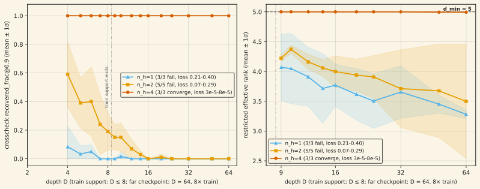
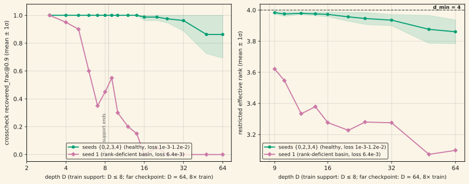

The companion note "When the instrument is the failure" (finding no. 12) left one call pending: after a broken readout was caught and corrected, was the compositional-depth endpoint FALSIFY or INCONCLUSIVE? This note closes that call directly from the committed checkpoints, with 152/152 harness-fidelity teeth against the primary lens's own recorded values. Every miss in the endpoint is now mechanism-diagnosed. A6's low-capacity configurations (n_h ≤ 2) show a depth-graded architecture ceiling: effective rank never exceeds ≈4.4 against a group-theoretic minimum of 5, and decays further with test depth — while n_h = 4 pins at rank 5.00 (σ ≤ 0.008) and reads crosscheck recovery 1.000 flat at every depth out to 8× training support, with zero seed variance. S5's one missing seed is a rank-deficient basin, not a composition failure: it satisfies training loss (6.4×10⁻³, unremarkable among its own siblings — one sibling's loss is worse) yet never assembles the group's rank-4 representation, and the deficit is visible inside the training support itself. A5's three non-converged seeds are a trainability lottery: the two that do converge read crosscheck recovery 1.00 at every one of seven evaluable training depths and 0.95–1.00 at 8× depth — an existence proof the architecture and budget already suffice. No cell anywhere shows a readout-artifact signature. Verdict of record, ratified: INCONCLUSIVE-TRAINABILITY-LIMITED, superseding the as-built FALSIFY. What this licenses, and only together: exact composition at 8× training depth in every converged configuration, with a clean architecture dissociation at A6 — and the trainability qualifier stated every time the 1.000 number appears. No compositional-depth capability win is claimed.
01What was left open
Finding no. 12 caught a broken primary readout — a scale-only "degauge" recovery metric that assumed the model's internal basis matched the task basis, an assumption validated on a different architecture and silently false on this one. Under the corrected, pre-registered crosscheck lens, the mechanical endpoint moved from a face-value FALSIFY to a mixed pattern: A6, the theorem's strongest exclusion case, showed the full predicted separation (contender at its own ceiling, baseline at exactly zero); S5 missed its bar, dragged by one seed. Two pin ambiguities discharged along routes quoted from the pre-registration itself, and the note closed with an explicit open item: "Whether the discharged-pin reading supersedes the as-built one as the stage verdict is an explicitly-pending promotion call."
The routing clause that governs this situation was itself pre-registered: on an INCONCLUSIVE read, diagnose using the two instruments the design specifies as the first things to check — M-D0 (the per-depth train-support convergence profile, re-read under the crosscheck lens since the primary is the documented broken instrument on this architecture) and M-D2 (the rank-vs-depth curve, corroborating evidence for whether a miss is a genuine representational collapse or a readout/compounding-error artifact). This note executes exactly those two instruments against three routed questions, and nothing else — no new metrics, no new training.
Every recovery number below is on the CPU-only re-read of committed checkpoints (26 cells, all evaluable train-support and 8×-depth rows), reproducing all 152 of the primary lens's own committed values bit-identically before any new number was trusted — the same fidelity bar finding no. 12 held its recompute to.
02Question (a): is A6's decisive config a budget artifact or an architecture ceiling?
A6 (the alternating group A₆, group-theoretic minimum faithful representation dimension dmin = 5) is swept across n_h ∈ {1, 2, 4} — the number of Householder-like factors composing each step's state update. Each rung gets the identical 40,000-step budget.
| n_h | seeds converged | final loss | crosscheck recovery, D=4→8 (train) |
|---|---|---|---|
| 1 | 0/3 | 0.209–0.400 | 0.00–0.25 → 0.00 (≈0 everywhere) |
| 2 | 0/5 | 0.073–0.293 | 0.60–0.75 → 0.15–0.35, decaying (seed 1 weakest: 0.20 → 0.00) |
| 4 | 3/3 | 3.2×10⁻⁵–8.2×10⁻⁵ | 1.00 flat |
The rank curve gives the mechanism: n_h = 4 pins at rank 5.00 exactly (4.99–5.00, σ ≤ 0.008) at every test depth from 9 to 64; n_h = 2 never exceeds ≈4.4 (peak mean 4.37 at D = 10) and decays to a mean of 3.50 by D = 64, never reaching the group's own minimum; n_h = 1 sits lowest and decays fastest. The n_h = 2 composer partially learns shallow compositions but cannot assemble the rank-5 structure deep composition requires — an expressivity ceiling that binds progressively with depth, not a budget effect (the identically-budgeted n_h = 4 triad converges 3/3). This refines the shorthand from finding no. 12 ("both lenses ≈0" for n_h ≤ 2): true on the far-depth grid and under the primary lens everywhere, but the crosscheck at shallow train depths reads up to 0.75 — the ceiling is depth-graded, not flat-zero.

03Question (b): S5's one non-generalizing seed — bad luck or bad representation?
S5's n_h = 4 quintet (five seeds, all trained identically) is where finding no. 12 flagged a "trainability-outlier" seed dragging the group below its bar. This round asks what, mechanistically, is different about it.
Seed 1's final training loss is 6.4×10⁻³ — not the worst in its own cohort (seed 2 finishes at 1.2×10⁻², nearly double, and is fully faithful). Loss alone cannot separate them. The per-depth crosscheck profile can: seed 1 reads 1.00 at D = 3, then decays inside the training support itself — 0.95 at D=4, 0.90 at D=5, 0.60 at D=6, 0.35 at D=7, 0.45 at D=8 — while all four siblings read 1.00 at every evaluable train depth — all 21 rows (recounted from the raw profile JSON). The rank curve confirms genuine representational collapse rather than a readout artifact: seed 1's effective rank runs 3.62 at D=9 down to 3.10 at D=64, never reaching the group's dmin = 4, while its siblings hold 3.97–3.99 down to a still-healthy 3.77–3.93. At the far checkpoint (D=64, 8× training depth), seed 1 reads crosscheck recovery exactly 0.000; its four siblings average 0.863 (σ = 0.170).
This is the in-the-wild version of a rank-deficient basin: an optimization run that satisfies the loss objective without ever assembling the faithful representation the task actually requires — a basin the loss surface does not penalize, and that final loss alone under-detects.

04Question (c): are A5's 3-of-5 non-convergences a budget artifact or a ceiling?
A5 (the alternating group A₅, dmin = 3) converges in only 2 of 5 seeds at its swept configuration. The question: raise the budget, or call it a ceiling?
The two converged seeds (final loss 3.7×10⁻⁴ and 7.1×10⁻⁴) read crosscheck recovery 1.00 at all seven evaluable training depths, D=2 through D=8. Their rank sits at dmin(A5) = 3 almost exactly (2.96–3.00) through D=64, with far-depth crosscheck recovery 0.95 and 1.00. This is a direct existence proof: at this exact configuration and budget, the architecture is sufficient whenever optimization lands in the faithful basin. The three non-converged seeds (final loss 0.069–0.157) show graded, decaying profiles — 0.90–1.00 at D=2 collapsing to 0.05–0.30 by D=8 — and rank starting near 2.6 at D=9 and decaying to ≈2.1 by D=64, always below dmin.
A budget-extension probe was not run here, and the pre-registration explains why it would be unlicensed: a prior stage's own budget-extrapolation experiment on this same architecture found no responsiveness to more steps (a measured +0.0010 improvement per +20K extra steps — indistinguishable from noise). With no evidence of budget-responsiveness and seed extension already exhausted, this is classified as a trainability lottery: an optimization difficulty at this configuration, not an architecture ceiling and not an instrument artifact — recorded as a determination, not left as an open ambiguity.
05Closing the instrument-defect branch
Across every cell in the routed focus set — both gating groups and A5 — the same pattern holds: every converged, faithful cell sits at its group's dmin and holds it to D=64 with minimal decay; every failing or deficient cell sits measurably below dmin and decays further with depth. This is the Stage-1 rank law (finding no. 07: recruited effective rank tracks the group-theoretic minimum, causally) reproducing inside the Stage-2 composer. No cell anywhere shows the alternative signature — rank holding steady while recovery degrades, which would indicate a readout or compounding-error problem rather than a genuine representational one. That closes the instrument-defect branch for this diagnosis, on top of finding no. 12's own harness-fidelity and shuffled-target teeth.
06The promotion: verdict of record
The coordinator ratified the recommendation this diagnosis supports: the campaign-level verdict of record for the Stage-2 compositional-depth generalization test is INCONCLUSIVE-TRAINABILITY-LIMITED, superseding the as-built mechanical FALSIFY (which remains the correct verdict for finding no. 12's own as-built pins, per bookkeeping discipline — nothing is retracted, the reading is superseded going forward). The grounds:
- FALSIFY is affirmatively excluded. A6 at n_h = 4 shows the exact pre-registered dissociation the composer theorem predicts: crosscheck far-depth recovery 1.000 flat across all 3 seeds, rank pinned at dmin(A6) = 5, against the β-restricted baseline at exactly 0.0 — zero seed variance on either side. A model class that composes exactly at 8× training depth wherever it converges cannot be the subject of a composition-capability FALSIFY.
- CONFIRM is unreachable under the frozen pre-registered aggregation. The all-seeds group-mean bars fail on trainability, not composition: S5's lone rank-deficient basin and A5's convergence lottery pull both groups' pooled means below their own bars. The pre-registered remedy for a borderline group is more seeds, never exclusion — re-registering the aggregation after the fact to reach CONFIRM is exactly what this program's own hard rules forbid.
What this licenses, stated together and not separately: papers may state that this composer class achieves exact composition at 8× training depth in every configuration that converges, with a clean group-level architecture dissociation at A6 (n_h = 4 holds the group-theoretic minimum rank and generalizes flat; n_h ≤ 2 shows a depth-graded ceiling below it) — and must state the trainability qualifier every time that claim appears. The primary lens's identity-gauge defect (finding no. 12) remains an open instrument-repair item; every recovery number on this page is crosscheck-lens, decisional.
07Caveats — read before citing
- This is not a compositional-depth capability win. The citable claims are exactly the two grounds in section 06 and the three mechanism diagnoses in sections 02–04. Anyone quoting "the model generalizes compositional depth" without the trainability qualifier is misquoting this page.
- Small, task-specific models on five finite groups. Depth tested to 8× training support (D=64 against D≤8 training). Conclusions are about this composer, these five groups, and these two readouts — not a general claim about compositional generalization in fast-weight models.
- The trainability diagnoses are not yet a fix. Naming the rank-deficient-basin and convergence-lottery failure modes is a diagnosis, not a remedy; no trainability-rate or basin-statistics intervention has been tried. A follow-on program to reduce the rate of these failures would need its own pre-registration.
- A6's n_h ≤ 2 ceiling is now measured, not assumed. It is a depth-graded architecture ceiling (up to 0.75 crosscheck recovery at shallow train depths, decaying to ≈0 by 8× depth) — a genuine, disclosed n_h-sufficiency result in its own right, distinct from the earlier flat "≈0 everywhere" shorthand.
- Zero GPU-hours for this diagnosis round — every number here is a CPU-only re-read of already-committed checkpoints (152/152 harness-fidelity teeth against the primary lens's own recorded values before any new number was trusted). The underlying sweep that produced the checkpoints cost ≈2.6 GPU-h; finding no. 12's re-metric and the two S5 seed-extension training cells added ≈0.6 GPU-h; this diagnosis added zero. Stage-2 running total ≈3.16 of a 25 GPU-h budget.
08Reproducibility
Everything is recomputable from committed raws: experiment-runs/2026-07-10_stage2_calibration/sweep_results/ (62 cells) and …/route_2p33/ (2 S5-extension cells) hold the full per-depth, per-cell JSONs this page's numbers are read from — 64 cells total. …/diag_2p34/ holds the diagnosis itself: diag_2p34.py (local M-D0/M-D2/M-D1 analysis over the committed grid, using stage2_harvest.py's own curve functions unmodified), diag_2p34_md0_box.py (the box-side crosscheck M-D0 re-read, the 152/152 harness-fidelity teeth) and its output JSON, per_seed_tables.py (the per-seed far-depth/rank tables quoted in sections 02–04), and their logs. The two figures on this page are generated directly from the raw per-cell JSONs (not from any intermediate table) by assets/plots/generate_composes_where_it_trains.py, using the same stage2_harvest.m_d2_curve / _curve helpers the diagnosis itself used.
References
- Siems, J., et al. (2025). DeltaProduct: Improving State-Tracking in Linear RNNs via Householder Products. arXiv:2502.10297
- Grazzi, R., et al. (2025). Unlocking State-Tracking in Linear RNNs Through Negative Eigenvalues. ICLR 2025, arXiv:2411.12537
- See also finding no. 12, "When the instrument is the failure" — the instrument-health diagnosis this note's endpoint depends on — and finding no. 07, "The rank law" — the Stage-1 causal result (recruited rank tracks the group-theoretic minimum) this diagnosis found reproducing inside the Stage-2 composer.